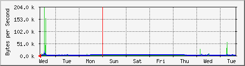
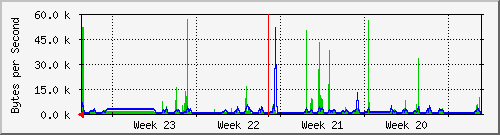
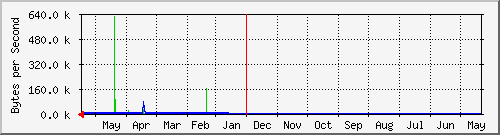

PERISUR-DAMAS
| System:MRTG | Core Perisur |
| Maintainer:dangelesc@finanzas.cdmx.gob.mx | |
| Description: | GigabitEthernet6/22 Damas |
| ifType: | ethernetCsmacd (6) |
| ifName: | Gi6/22 |
| Max Speed: | 12.5 MBytes/s |
| Ip: | 10.1.121.222 (No DNS name) |
Target[10.1.16.126_99]: 99:monitoreo@10.1.16.126: SetEnv[10.1.16.126_99]: MRTG_INT_IP="10.1.101.194" MRTG_INT_DESCR="TenGigabitEthernet3/2" MaxBytes[10.1.16.126_99]: 536870911 Title[10.1.16.126_99]: Traffic Analysis for 99 -- SW-12.126-DRL.Rack01.finanzas.df.gob.mx PageTop[10.1.16.126_99]: Traffic Analysis for 99 -- SW-12.126-DRL.Rack01.finanzas.df.gob.mx
| System: | SW-12.126-DRL.Rack01.finanzas.df.gob.mx in Proxmox-10.1.250.* |
| Maintainer: | alberto <luis.a.lol@outlook.com> |
| Description: | TenGigabitEthernet3/2 Uplink.Rio.Loza |
| ifType: | ethernetCsmacd (6) |
| ifName: | Te3/2 |
| Max Speed: | 536.9 MBytes/s |
| Ip: | 10.1.101.194 (No DNS name) |
Estadísticas actualizadas el Miércoles 16 de Junio de 2021 a las 16:45,
'Core_Perisur.finanzas.df.gob.mx' ha estado funcionando durante 434 days, 21:33:09.
Gráfico diario (5 minutos : Promedio)

|
Máx |
Promedio |
Actual |
| Entrante: |
450.6 kB/s (3.6%) |
7354.0 B/s (0.1%) |
8463.0 B/s (0.1%) |
| Saliente: |
400.2 kB/s (3.2%) |
3037.0 B/s (0.0%) |
248.7 kB/s (2.0%) |
Gráfico semanal (30 minutos : Promedio)

|
Máx |
Promedio |
Actual |
| Entrante: |
201.1 kB/s (1.6%) |
2388.0 B/s (0.0%) |
789.0 B/s (0.0%) |
| Saliente: |
17.0 kB/s (0.1%) |
1847.0 B/s (0.0%) |
513.0 B/s (0.0%) |
Gráfico mensual (2 horas : Promedio)

|
Máx |
Promedio |
Actual |
| Entrante: |
56.5 kB/s (0.5%) |
2305.0 B/s (0.0%) |
4674.0 B/s (0.0%) |
| Saliente: |
51.4 kB/s (0.4%) |
1291.0 B/s (0.0%) |
2072.0 B/s (0.0%) |
Gráfico anual (1 día : Promedio)

|
Máx |
Promedio |
Actual |
| Entrante: |
626.4 kB/s (5.0%) |
8199.0 B/s (0.1%) |
822.0 B/s (0.0%) |
| Saliente: |
70.9 kB/s (0.6%) |
1579.0 B/s (0.0%) |
832.0 B/s (0.0%) |
| VERDE ### |
Tráfico entrante en Bytes por segundo |
| AZUL ### |
Saliente:going Traffic in Bytes per Second |